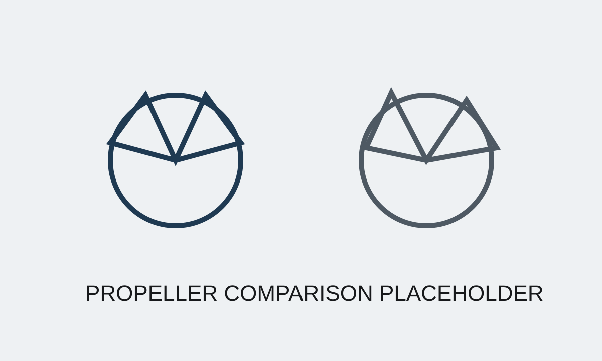

Case Study 03
Propeller Development & Testing
Built a first-principles testing and analysis framework to replace intuition-driven propeller selection. Standardized evaluation methods and enabled data-driven iteration, resulting in selection of a propeller delivering approximately 13% higher system efficiency.
Short Summary
Built a first-principles testing and analysis framework to replace intuition-driven propeller selection. Standardized evaluation methods and enabled data-driven iteration, resulting in selection of a propeller delivering approximately 13% higher system efficiency.
The Problem
Propeller selection relied heavily on intuition and inconsistent test comparisons, making it difficult to isolate the true impact of geometry on overall system performance.
Constraints
- Real-world on-water variability reduced repeatability
- Multiple candidate propeller geometries required consistent comparison
- Testing needed to support rapid iteration with suppliers and internal teams
- Selection decisions needed to reflect full system performance, not just thrust
My Approach
- Reframed the problem from first principles by defining meaningful system-level performance metrics
- Structured test conditions and reporting to reduce variability
- Built standardized performance analysis tools for cross-run comparison
- Collaborated with software teams and suppliers to align measurements and iteration cycles
- Used iterative loops to refine geometry based on measured performance
What I Built
- Automated reporting and comparison tools for propeller test runs
- A repeatable framework for cross-run efficiency evaluation
- A structured basis for design iteration and supplier feedback
Results
- Enabled consistent, data-driven propeller comparison across test runs
- Selected a propeller delivering approximately 13% efficiency improvement
- Improved understanding of system-level tradeoffs between geometry and performance
- Established a credible baseline for future propeller development
What Went Wrong / Iterations
On-water testing introduced variability that initially obscured performance differences. Iteration focused not only on geometry, but on improving test discipline and analysis methods to ensure conclusions were grounded in comparable data.
What I'd Do Next
Expand the framework with tighter environmental normalization and a larger dataset to accelerate screening of future designs, including advanced geometries such as toroidal propellers.
Images



Confidentiality Note
Details and visuals have been simplified to respect confidentiality while preserving the technical approach.